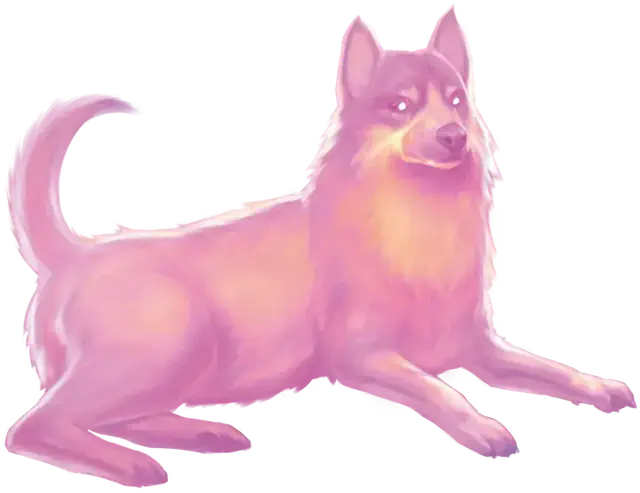

Заданная иллюзия
Programmed Illusion
6 уровень, Иллюзия

Время сотворения Действие
Дистанция 120 футов
Компоненты В, С, М (порошок нефрита стоимостью не менее 25 ЗМ)
Длительность Пока не рассеяно
Вы создаёте иллюзию объекта, существа или другого видимого явления в пределах дистанции, активирующуюся при выполнении определённых условий. Пока условия не выполнены, иллюзия необнаружима. Она должна помещаться в 30-футовый Куб; при сотворении заклинания вы определяете, как иллюзия будет себя вести, и какие звуки она будет издавать. Сценарий действий иллюзии может длиться вплоть до 5 минут.
Когда указанное вами условие будет выполнено, иллюзия проявляется и выполняет описанные вами действия. Как только иллюзия закончит выполнение сценария, она исчезает и бездействует в течение 10 минут, после чего иллюзия снова может быть активирована.
Условие может быть задано как в общем виде, так и конкретно, по вашему выбору, но оно должно основываться на видимом или слышимом событии, происходящем в пределах 30 футов от области иллюзии. Например, вы можете создать иллюзию себя самого, появляющуюся и предупреждающую тех, кто попытается открыть дверь с ловушкой.
Физическое взаимодействие с образом даёт понять, что это иллюзия, потому что сквозь него всё проходит. Существо может определить, что это иллюзия, действием Изучение исследуя её и преуспев в проверке Интеллекта (Расследование) против вашей Сл спасброска заклинаний. Если существо распознаёт иллюзию, оно может видеть сквозь неё, а издаваемые ей звуки становятся полуслышимыми.